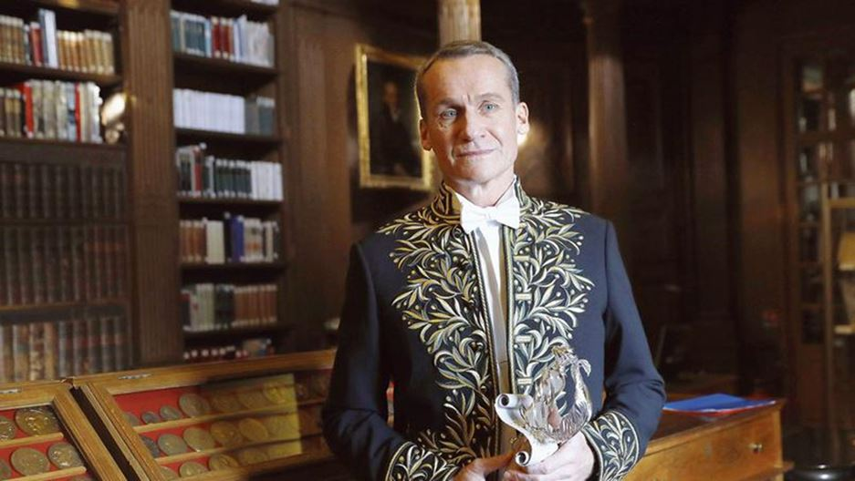
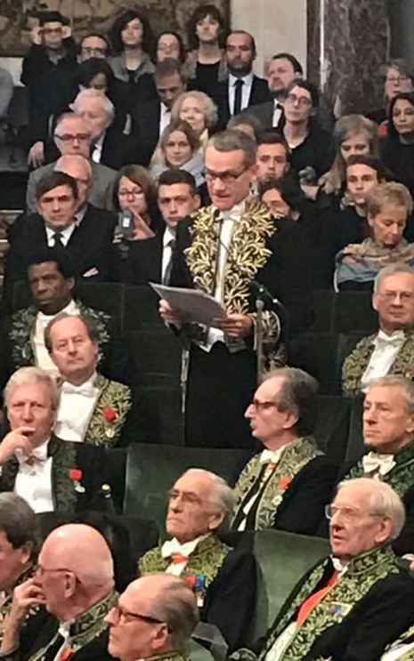
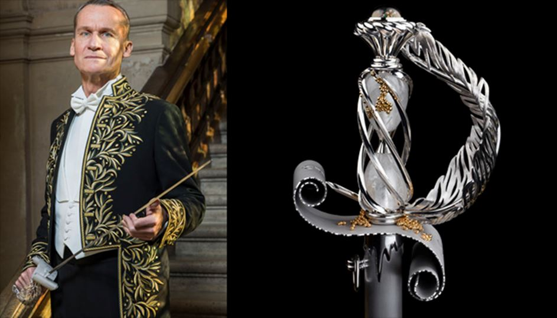
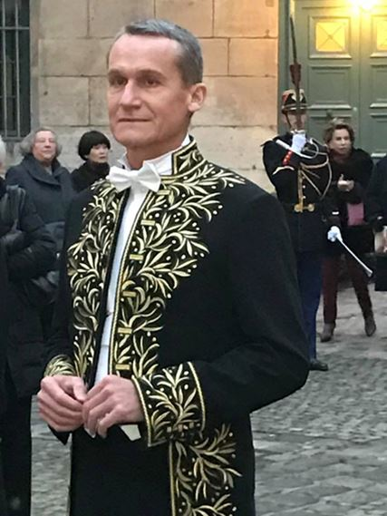
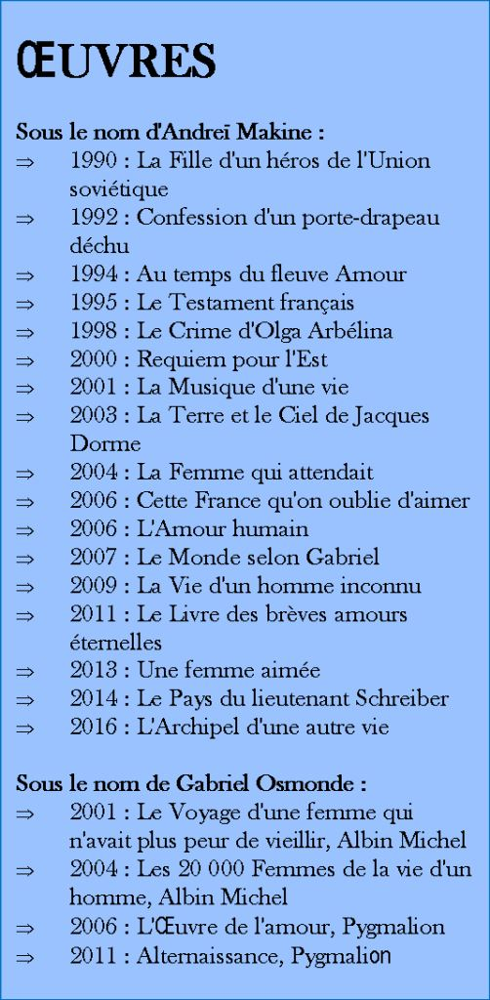

Elu au mois de mars, l'écrivain d'origine russe Andreï Makine a été reçu, lors de la séance solennelle de l’Académie française, le 15 janvier 2017. IL n’est certes pas le premier écrivain d’origine russe à siéger quai Conti puisqu’avant lui Joseph Kessel, Henri Troyat, Maurice Druon et Hélène Carrère d'Encausse eurent l’honneur de porter l’habit vert.
L'usage veut que dans son discours d’intronisation, chaque académicien reçu pour la première fois sous la Coupole rende un hommage à son prédécesseur. Andreï Makine ne dérogea pas à l’usage et rendit l’hommage à Assia Djebar envers qui il loua la « romancière à l'imaginaire fécond, cinéaste subtile, professeur reconnu sur les deux rives de l'Atlantique », et dont la carrière était « une illustration vivante de ce que la sacro-sainte école de la République avait de plus généreux ».
Mais son discours, peu attendu, a également été marqué par un plaidoyer en faveur de la Russie, des relations franco-russes et de l’attitude des dirigeants européens, au moment où, à Bruxelles, ils continuent d'accentuer la pression sur Moscou pour infléchir sa position dans le conflit syrien mais aussi en Ukraine.
Face à un public venu en très grand nombre, où l'on reconnaissait Olivier Bétourné, Bertrand Visage, Olivier Nora et Adrien Bosc du Seuil, Vera Michalski, Philippe Rey et Juliette Binoche, Makine a rappelé la raison d'être même de l'Académie en ces termes: « Assurer à la langue et à la culture françaises le rayonnement le plus large possible et offrir à cette tâche le concours des intelligences œuvrant dans les domaines les plus variés. » Ce fut donc un discours fleuve, dans lequel il a évoqué Saint-Simon, la visite de Pierre le Grand aux académiciens, la tsarine francophone Catherine II, Fonvizine et ses Lettres de France, qu'il a citées abondamment, Voltaire, Pouchkine et Tolstoï, Tchekhov et Dostoïevski, et plus près de nous, Edmonde Charles-Roux.
Au milieu de son discours, le désormais benjamin de l'auguste Compagnie a regretté que « les grandes puissances » occidentales « jouent avec le feu, en livrant des armes aux intégristes, en les poussant dans la stratégie du chaos, au Moyen-Orient ». IL est par ailleurs revenu sur la sanglante bataille de la Moskova, la guerre de Crimée et politique fratricide de l'Ukraine. Ainsi, à rebours de la position officielle de la France qui dénonce depuis deux ans l'annexion de la Crimée et les atteintes de Moscou à l'intégrité territoriale de l'Ukraine, l'écrivain a évoqué « l’horrible tragédie ukrainienne » en condamnant « la guerre fratricide orchestrée (à Kiev) par les stratèges criminels de l'Otan et leurs inconscients supplétifs européens ».
L'attitude face à la littérature des dirigeants d'aujourd'hui n'a pas non plus été passée sous silence. « Cette haute conception de la parole littéraire est toujours vivante sur la terre de France. Malgré l'abrutissement programmé des populations, malgré la pléthore des divertissements virtuels, malgré l'arrivée des gouvernants qui revendiquent, avec une arrogance éhontée, leur inculture. « Je ne lis pas de romans », se félicitait l'un d'eux, en oubliant que le bibliothécaire de Napoléon déposait chaque jour sur le bureau de l'Empereur une demi-douzaine de nouveautés littéraires que celui-ci trouvait le loisir de parcourir.
« Entre Trafalgar et Austerlitz, pour ainsi dire », s'indigne l'écrivain. « Ces arrogants incultes oublient la force de la plume du général de Gaulle, son art qui aurait mérité un Nobel de littérature à la suite de Winston Churchill. Ils oublient, ces ignorants au pouvoir, qu'autrefois les présidents français non seulement lisaient les romans mais savaient en écrire. Ils oublient que l'un de ces présidents fut l'auteur d'une excellente Anthologie de la poésie française ». Est-ce là une allusion à un président normal ?

L’épée de l’académicien réalisée par la Maison Chopard
Installé en France depuis 1987, l'écrivain âgé de 59 ans a obtenu la nationalité française en 1996, un an après la publication du « Testament français » qui lui a valu le prix Goncourt, le Médicis et le Goncourt des lycéens. Cet amoureux de la langue française, né au cœur à Krasnoïarsk au temps où existait encore l'Union soviétique a depuis publié une vingtaine d'œuvres en français.
Interrogé par l'AFP à l'issue de la cérémonie sous la Coupole, Andreï Makine, vêtu de son habit vert dessiné par Giorgio Armani et épée à la main, a jugé « ridicules » les accusations contre la Russie à propos d'Alep : « voilà une ville bombardée pendant quatre ans, les Russes arrivent et ce sont eux les responsables ! C'est ridicule ».
En entrant parmi les immortels, Andreï Makine aura su insuffler le « charme russe » dans l'Académie, selon certains, et ne doutons pas que par lui les relations franco-russes continueront d’avoir l’un de ses plus brillants ambassadeurs.
Partager cette page